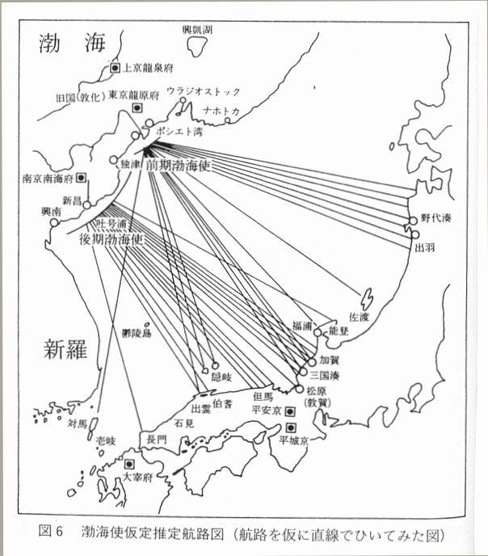
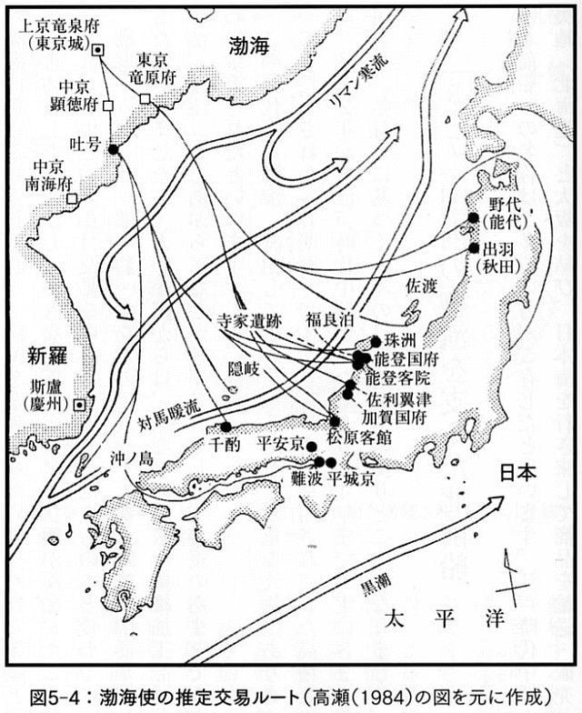
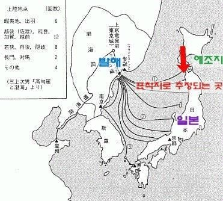
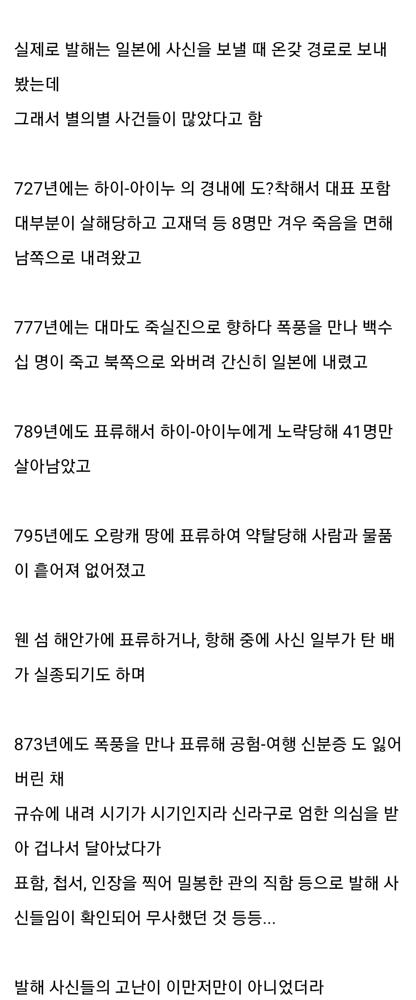

저쪽해로가 조카 같아서 그럴꺼야
한류와 난류가 만나는 좋은 어장
이라는 뜻이 과거에는 결코 좋은 뜻이 아닐꺼야
해류가 서로 반대로 간다는 뜻이니까...
분명 계절별로 해류 위치도 바뀔거고
뭐야 에게해 저거랑 비교하면 에겐해잖아?
아나톨리아까지 가서 해적질 하고 식민시나 건설한거 보면 졸라 살만했겠지. 항해술 발달전 트로이에서도 해적질한 기록이 히타이트 문서에까지 기록된걸 보믄
지중해 자체가 사방이 대륙으로 막힌 내해라 되게 얌전한 편인걸로 알음
아이누한테 두번이나 당했네
795년에 약탈한 오랑캐도 아이누인 듯...
신라구 이미친놈들ㅋㅋㅋ
저렇게 위험한데오 왜 꼭 일본에 사신을 보내야했던거임???
신라 견제
어 월!!! 어 쉽!! 어 맨!!!
이런건 어디기록에 써있는거야
https://db.history.go.kr/ancient/search/searchTotalResult.do 한국 고대 사료 데이터베이스에 발해를 검색하면 나오는 옛 사료들일 듯. 아마 속일본기에 저 광경을 목격한 일본 쪽의 기록들도 꽤나 있을거고
대한해협 없으면 노젓는 배로는 많이 험난하네